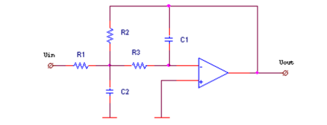
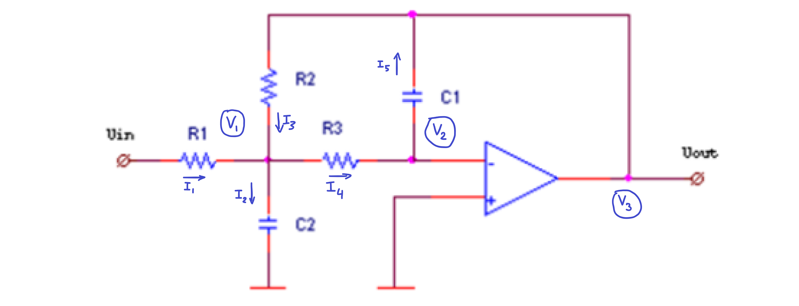

This is a topology called the Multiple Feedback filter. It is an active filter, like the Sallen-Key one.

I first label the nodes and currents.

And here are the current equations:
\( I_1 = \frac{V_{in} - V_1}{R_1} \)
\( I_2 = s C_2 V_1 \)
\( I_3 = \frac{V_3 - V_1}{R_2} \)
\( I_4 = \frac{V_1 - V_2}{R_3} \)
\( I_5 = s C_1 (V_2 - V_3) \)
And here are the KCL and known voltage equations.
KCL1: \( I_1 + I_3 = I_2 + I_4 \)
KCL2: \( I_4 = I_5 \)
OPAMP1: \( V_2 = 0 \)
I can ignore the non inverting input, since the op-amp will make the two inputs equal, so I can just directly specify the inverting input to be 0V.
And after plugging it into the HP-Prime, the result for V3 is quite long.
\( V_3 = \frac{-R_2 V_{in}}{ C_1 C_2 R_1 R_2 R_3 s^2 + C_1 R_1 R_2 s + C_1 R_1 R_3 s + C_1 R_2 R_3 s + R_1 } \)
Simplifying a little bit and also dividing by \( V_{in} \) yields:
\( H(s) = \frac{-R_2}{ C_1 C_2 R_1 R_2 R_3 s^2 + C_1 (R_1 R_2 + R_1 R_3 + R_2 R_3)s + R_1 } \)
Then we take the denominator, and normalize the \( s^2 \) term to have a coefficient of 1.
\( C_1 C_2 R_1 R_2 R_3 s^2 + C_1 (R_1 R_2 + R_1 R_3 + R_2 R_3)s + R_1 \)
\( s^2 + \frac{C_1 (R_1 R_2 + R_1 R_3 + R_2 R_3)}{C_1 C_2 R_1 R_2 R_3}s + \frac{R_1}{C_1 C_2 R_1 R_2 R_3} \)
= \( s^2 + \frac{R_1 R_2 + R_1 R_3 + R_2 R_3}{C_2 R_1 R_2 R_3}s + \frac{1}{C_1 C_2 R_2 R_3} \)
And now we try to fit it to the second order transfer function form:
\( s^2 + 2 \zeta \omega_0 s + \omega_0^2 \)
So we can see that,
\( \omega_0 = \frac{1}{\sqrt{C_1 C_2 R_2 R_3}} \)
\( \zeta = \frac{R_1 R_2 + R_1 R_3 + R_2 R_3}{2 \sqrt{C_1 C_2 R_2 R_3}} \)
For the purposes of designing one unit of a second order filter, which is what this is, since there aren't any zeros and the two poles are complex conjugates of eachother, we only really need to specify two values - \( \omega_0 \) (the undamped natural frequency), and \( \zeta \) (the damping factor).
Since we have five free variables here (\(R_1, R_2, R_3, C_1, C_2\)), we have can arbitrarily decide on three equations for these, for example we could arbitrarily choose three of the values, or have other equations.
For practical purposes, I will decide that:
\( C_1 = C_2 = C\)
\( R_1 = R_2 = R_3 = R \)
So now, substituting these values in, we get:
\( \omega_0 = \frac{1}{R C} \)
\( \zeta = \frac{3 R}{2 C} \)
Now we can isolate for \(R\) and \(C\) using the calculator or by hand, I used the HP-Prime and I also only wrote down the positive solutions since we can't really get negative resistors or capacitors very easily
\( R = \frac{\sqrt{6 \omega_0 \zeta}}{3 \omega_0}\)
\( C = \frac{\sqrt{6 \omega_0 \zeta}}{2 \omega_0 \zeta}\)
This basically concludes the analysis of the low pass MFD active filter.